Release 3.3 Copyright ©1994 by NeXT Computer, Inc. All Rights Reserved.
| 14 | Security | |
| Security is a consideration whether you have a single computer or a huge network. A lack of security controls can result in equipment or data being lost, sensitive information being disclosed, or important files being modified. | ||
| Some say that the most secure computer is still in its box, but it's not very useful. Keep in mind that when you tighten security, users may require your assistance to perform tasks which they could previously do for themselves. If you discover that a particular security precaution is costing you too much support time, consider reinstating a more open system and allowing users to do things for themselves. |
| Implementing Security |
| Security precautions can include physically securing your equipment, controlling access to particular directories, or preventing users from performing specific tasks. Some precautions apply whether your computer is standalone or on a network, while others apply only when you're maintaining a network.
Note: Some of the procedures in this chapter involve executing commands in a shell window, while others require that you modify a NetInfo database. You must have root privileges to execute the shell commands, either by using the su command or, if you must, logging in as root. When you use NetInfoManager to make modifications to a NetInfo domain, you'll need to know the root password for that domain.
Security and the Standalone Computer The precautions in this section are important whether your computer is standalone or attached to a network. The procedures listed in "Physical Data Security" and "Protection from Viruses" are precautions that should be taken by all users of the system, not just the system administrator.
Physical Data Security Balanced security starts with physical security. Computers are most secure when only authorized users can reach them. If your computer is not physically secure, someone could carry it away and have access to all of the data on it. Physical security can also be applied to the data on the computer. One of the best ways to make your data physically secure is to remove it from the computer when you're not using it. Keep your documents on a removable disk that you eject when you finish using it. Remember to keep your disks in a place where they're not accessible to unauthorized users.
Protection from Viruses The easiest way to get a virus or other destructive program onto your computer is through a removable disk. Another way is through multimedia electronic mail. Most viruses result from running software from a dubious source. If you aren't sure of the source of an application, don't start it up.
Protecting Directories Several directories on your NeXT computer are protected in a special way--/NextDeveloper/Demos, /usr/lib/NextStep/Displays, and "/" (root), among others. Any user can place files or directories into these locations, but only the creator (or root) can remove or overwrite them. While this protection scheme is convenient for users, you may decide that you don't want users able to write to these directories. If you do remove write access, you'll need to create any files or directories in these locations as root. In the case of /usr/lib/NextStep/Displays, removing write access means that users won't be able to add additional displays to their computer themselves.
Removing Write Access To remove write access from a directory, follow these steps. |
| 1. | Enter the following command in a shell window, replacing /directory with the name of the directory you're protecting: |
 chmod 755 /directory
chmod 755 /directory
| 2. | To verify that the protection is correct, enter: |
 ls -ldg /directory
ls -ldg /directory
| The output should be something like this: |
 drwxr-xr-x 16 root wheel 1024 Oct 3 16:02 /directory
drwxr-xr-x 16 root wheel 1024 Oct 3 16:02 /directory
| Note: The first string of characters in this output indicates the permissions on the directory, and should match your output. The owner and group should also match, but the rest varies. |
| Restoring Write Access
To restore special write access to a directory, follow these steps. |
| 1. | Enter the following command in a shell window: |
 chmod 1777 /directory
chmod 1777 /directory
| 2. | Verify the new permissions by entering |
 ls -ldg /directory
ls -ldg /directory
| The output should be something like this: |
 drwxrwxrwt 16 root wheel 1024 Oct 3 16:02 /directory
drwxrwxrwt 16 root wheel 1024 Oct 3 16:02 /directory
| Setting a Hardware Password
A simple way to increase the security of your computer is to set a hardware password. Once set, users need to know the password in order to perform certain functions. For example, the password is required to boot in single-user mode, which gives the user root access, or to boot from a disk other than the default, which might give the user root access. As with any other password, consider changing the hardware password on a regular basis. See Chapter 9, "System Startup and Shutdown," for details.
Removing root Privileges for Preferences The Preferences application allows users to modify many features of their system. Some of these modifications require root privileges to be executed successfully. For example, for a user to be able to change the time, they must change the value stored on the clock chip, which requires root access. All activities requiring root privileges have a corresponding program file in /usr/lib/Preferences. In this directory you'll find boot_cmd, used to change the startup device; check_ntpd, used to synchronize time with network time service; and clock_chip, date, and set_time_zone, used to change the time, date, and time zone. If you want to disable one of these features, you can change the permissions on the corresponding file in /usr/lib/Preferences. For example, if you don't want users to be able to change the startup device, you should change the permissions on boot_cmd. If your computers are connected together in a network, you should always enable network time service, so that time is set centrally. With network time service enabled, users can't change the date and time of their local computer except to synchronize it with the network. This is important when you're sharing remote files, and will avoid causing problems with any programs that rely on the creation and modification times of files. If you're not using network time, you can change the permissions on the files clock_chip, date, and set_time_zone. By removing root privileges, users can't change time.
Removing root Privileges To prevent Preferences from running a feature as root, follow these steps. |
| 1. | Enter the following commands, replacing file with the appropriate file name: |
 cd /usr/lib/Preferences
cd /usr/lib/Preferences
 chmod 755 file
chmod 755 file
| 2. | To check that the protection is correct, enter the following, again replacing file with the appropriate file name: |
 ls -lg file
ls -lg file
| You should see something similar to the following: |
 -rwxr-xr-x 1 root wheel 16384 Sep 19 21:08 date*
-rwxr-xr-x 1 root wheel 16384 Sep 19 21:08 date*
| Restoring root Privileges
To restore root privileges to a Preferences feature, follow these steps. |
| 1. | Enter the following commands, replacing file with the appropriate file name: |
 cd /usr/lib/Preferences
cd /usr/lib/Preferences
 chmod 6755 file
chmod 6755 file
| 2. | To check that the protection is correct, enter the following: |
 ls -lg file
ls -lg file
| You should see something similar to the following: |
 -rwsr-sr-x 1 root wheel 16384 Sep 19 21:08 date*
-rwsr-sr-x 1 root wheel 16384 Sep 19 21:08 date*
| Removing root Privileges from PrintManager
PrintManager also acts with root privileges in certain instances. This allows any user to add printers, remove printers, and stop printing queues. If you don't want a computer you're using as a shared printing resource to be modified, you can change the protections on PrintManager to disable its ability to act as root.
Removing root Privileges To restrict PrintManager, use the following procedure. |
| 1. | Enter the following commands in a shell window: |
 cd /NextApps/PrintManager.app
cd /NextApps/PrintManager.app
 chmod 755 PrintManager
chmod 755 PrintManager
| 2. | To check that the protection is correct, enter the following command: |
 ls -lg PrintManager
ls -lg PrintManager
| You should see something that looks like this: |
 -rwxr-xr-x 1 root wheel 163840 Sep 19 21:08 PrintManager
-rwxr-xr-x 1 root wheel 163840 Sep 19 21:08 PrintManager
| Restoring root Privileges
To restore root privileges, follow these steps. |
| 1. | Enter the following commands: |
 cd /NextApps/PrintManager.app
cd /NextApps/PrintManager.app
 chmod 6755 PrintManager
chmod 6755 PrintManager
| 2. | To check that the protection is correct, enter the following command: |
 ls -lg PrintManager
ls -lg PrintManager
| You should see something that looks like this: |
 -rwsr-sr-x 1 root wheel 163840 Sep 19 21:08 PrintManager
-rwsr-sr-x 1 root wheel 163840 Sep 19 21:08 PrintManager
| Setting Security Options in NetInfo
Four options are available to help make your computer more secure. You enable these options by modifying the NetInfo database. The four options are: |
| login_accounting--With this option set, a syslog message is generated for all failed login attempts. Such messages are recorded in /usr/adm/messages. | ||
| secure_passwords--With this option, user passwords must be 8 characters long and contain at least one character other than a letter. | ||
| lockout--With this option, each failed login attempt creates a delay before another login attempt can be made. The initial delay is 1 second; each failed attempt doubles the delay to a maximum of 10 minutes. | ||
| discourage_public_servers--With this option set, users can't set either Public Window Server or Public Sound Server. The checkboxes for these options aren't displayed in the Experts panel of the Preferences application. |
| Follow these procedures to set a security option: |
| 1. | Start up NetInfoManager. | |
| 2. | Double-click "/" to open the Directory window. | |
| 3. | Choose Append Property from the Directory menu to add a new property. | |
| 4. | Enter security_options into the text field and press Return. |
| 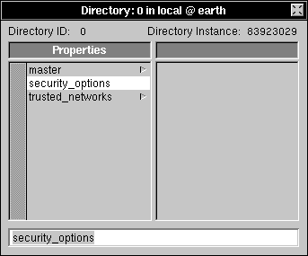 |
| 5. | Choose New Value from the Directory menu. | |
| 6. | Enter the name of the security option you want to set (as described earlier) and press Return. |
| 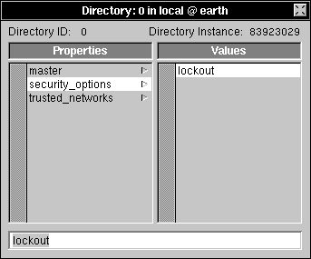 |
| 7. | If you're setting additional options, choose Append Value from the Directory menu, enter the appropriate name, and press Return. | |
| 8. | Choose Save from the Directory menu. |
| Note: If you want to protect more than a single computer, you can set these options in the root domain or a midlevel domain. All computers served by the domain will use the security options set there.
Security and the Local Area Network Additional precautions may be necessary if you're connected to a local area network (LAN). The precautions listed here may be useful on even a small network of NeXT computers. The security of a network is like the strength of a chain: the chain is only as strong as its weakest link. In making a network more secure, it's important to secure all of the computers. Failing to secure one computer is like having a rusted link in the chain--that's where security will break down. If you decide to leave security more open on your network, be careful when you allow external access to it. Most network security problems don't come from inside; they come through modems or connections to other networks. Securing modems and network connections will prevent these kinds of problems.
General Precautions One area of concern when working on a network is the use of shared file systems. Be particularly careful about which computers are granted root access to a shared directory, and about how unknown users are treated. For more details, see Chapter 4, "Setting Up the Network File System." Another general security precaution involves the Public Window Server and Public Sound Server options in the Expert Preferences section of the Preferences application. Both switches are turned off by default, which is the secure option. If they're turned on, remote users can play sounds on your computer, listen to your microphone, draw on your screen, read the picture displayed on your screen, or make use of your digital signal processor (DSP). The last general security precautions on a network are fundamental UNIX security issues. As shipped, the operating system shells (like /bin/csh) on your NeXT computer don't trust information provided by other computers on your network. You may decide it's desirable to allow the computers to trust each other so that users can move freely about the network. Carefully read the UNIX manual pages on .rhosts and hosts.equiv before using these capabilities. When you trust another computer, it should implement the same procedures for protection that you do for your own system. If it doesn't, it's an open back door.
Securing Printer and Fax Addition You can prevent regular users from adding or removing printers or fax modems by disabling modifications to the printers and fax_modems NetInfo directories. The disadvantage of tightening this security is that users won't be able to share their printers with the rest of the network without your help. The procedures in this section must be performed in every domain you wish to protect.
Disabling Modification Follow these procedures to prevent users from adding or deleting printers or fax modems. |
| 1. | Start up NetInfoManager and open the domain you wish to protect. | |
| 2. | Click /printers in the domain window. |
| 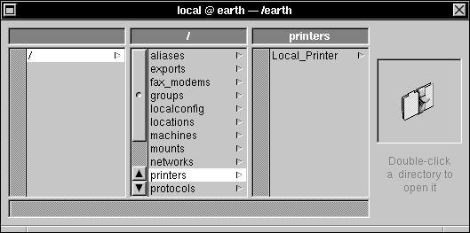 |
| 3. | Double-click printers to open a Directory window, then click _writers. |
| 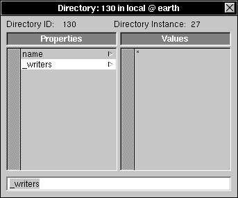 |
| The values associated with the _writers property list the names of the users that are allowed to modify the contents of this NetInfo directory--add, delete, or modify properties and add or delete subdirectories. In this case, "*" indicates that any user can make modifications. |
| 4. | Choose Delete from the Edit menu to destroy this property. | |
| 5. | Choose Save from the Directory menu to save your changes. Click Change in the confirmation panel if it appears. |
 |
| 6. | Enter the root password for this domain, if you're prompted for it. |
| Now only root will be able to create, destroy, or modify this directory. Repeat this procedure with the /fax_modems directory, if you want.
Enabling Modification To reinstate the original behavior, recreate the _writers property. |
| 1. | Start up NetInfoManager | |
| 2. | Double-click /printers to open the Directory window. |
| 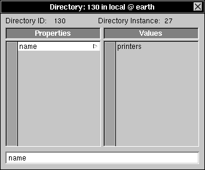 |
| 3. | Choose Append Property from the Directory menu. |
| 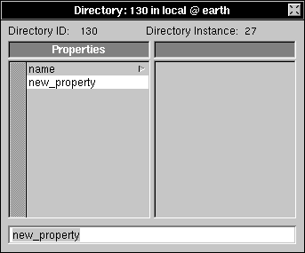 |
| 4. | Change new_property to _writers in the text field, then press Return to record the change. |
| 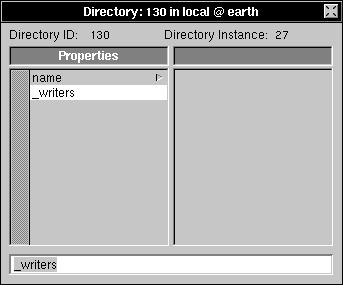 |
| 5. | Choose New Value from the Directory menu. |
| 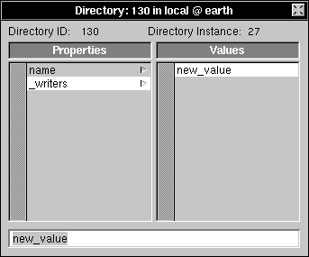 |
| 6. | Type "*" in the text field and press Return. |
| 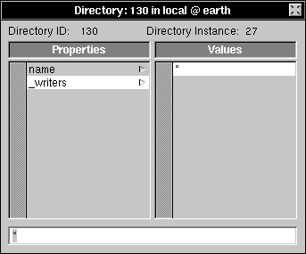 |
| 7. | Save the directory by choosing Save from the Directory menu. Click Change in the confirmation panel, if it appears. | |
| 8. | If prompted, enter the root password for the domain. |
| Now anyone can make modifications to this directory. You can use the same procedure for the /fax_modems directory.
Securing Print Jobs You can make print jobs execute as the unprivileged user nobody (the same account used for unknown users accessing an NFS directory) if you add the property RemoteAsNobody to the NetInfo entry for the printer. The property doesn't need a value, it just needs to exist.
Running Print Jobs as nobody Follow these steps to run print jobs as nobody. |
| 1. | Start up NetInfoManager and open the domain you want to protect. | |
| 2. | Click /printers, then the name of a specific printer. Double-click the name to open the Directory window. | |
| 3. | Click name, then choose Append Property from the Directory menu. A new property will appear with the name new_property. |
| 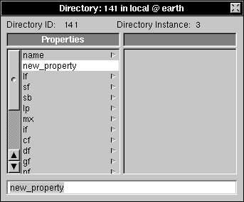 |
| 4. | Enter RemoteAsNobody in the text field, then press Return. |
| 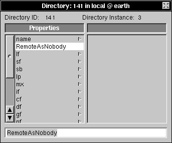 |
| 5. | Choose Save from the Directory menu to save your changes. Click Change in the confirmation panel if it appears. | |
| 6. | If prompted, enter the root password for the domain. |
| Note: To keep someone from removing the RemoteAsNobody property, you must also remove the _writers property.
Running Print Jobs as the User To reverse this procedure, simply delete the RemoteAsNobody property. You may also want to add the _writers property following the instructions in the earlier section "Securing Printer and Fax Addition." |
| 1. | Start up NetInfoManager and open the appropriate domain. | |
| 2. | Click /printers, then the name of a specific printer. Double-click the name to open the Directory window. | |
| 3. | Click RemoteAsNobody. |
| 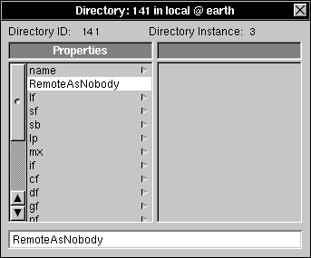 |
| 4. | Choose Delete from the Edit Menu. |
| 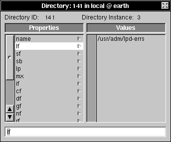 |
| 5. | Choose Save from the Directory menu, click Change in the confirmation panel if it appears, and enter the root password, if prompted. |
| Checking for Passwords
The easiest way to check the passwords on a given computer is with NetInfoManager. |
| 1. | Log into the computer storing the accounts you want to check. | |
| 2. | Start up NetInfoManager and open the domain you want to check. | |
| 3. | Click /users, then click one of its subdirectories. |
 |
| 4. | Choose View from the Domain menu, then choose View Directories By. Click passwd in the panel that appears. |
| 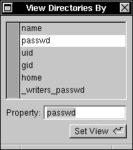 |
| 5. | Click Set View. | |
| The directories are listed in the Domain window by the value of their passwd property rather than the value of their name property. | ||
| 6. | Look for accounts that have no password, indicated by a blank value or by dir:#, where # is replaced by some number. |
| 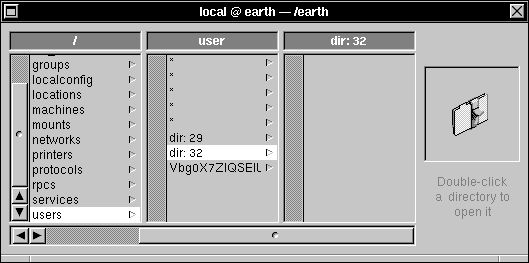 |
| 7. | Click any subdirectory that doesn't have a password, then double-click it to open the Directory window. |
| 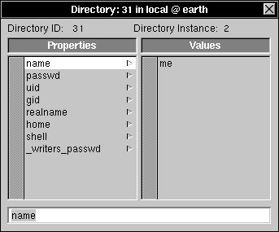 |
| 8. | Select the name property. The name of the user will appear in the second column. | |
| 9. | Ask the user to add a password with Preferences, or add one yourself with UserManager and ask the user to change it later. |
| Repeat these steps for each domain.
Locating Setuid and Setgid Programs Programs, including shell scripts, can be configured to run as the owner of the program file, rather than the user that executes it. Such program files are called setuid files because they set the user ID. Programs can also be configured to run with the privileges of the group associated with the file, rather than the user's default group. These are called setgid files. Many programs can act as root or wheel in this way. Most of these are well-tested and safe. However, if you install a program or application with this ability, you should be careful. For example, any shell script that's configured to act as root might be used to breach the security of your computer. To locate all setuid files, enter the following command from a shell window: |
 find / -perm -4000 -print
find / -perm -4000 -print
| If you want to restrict the output to just those files that set the user ID to root, use this command: |
 find / -perm -4000 -user root -print
find / -perm -4000 -user root -print
| You can use similar commands to locate all setgid files, or files that set the group ID to a particular group. For more information, see the UNIX manual page for find.
When you locate such files, you can either remove them, or use the chmod command to remove the setuid and setgid bits from the file. The command used earlier in this chapter to secure permissions is an example of this. For more information, see the UNIX manual page for chmod. Another related security precaution is to ignore the setuid bit when you mount (import) remote directories. See Chapter 4, "Setting Up the Network File System," for details.
Security and Remote Access Computers that are used to grant external access require special attention. External access may be as sophisticated as high-speed data connections to a TCP/IP wide-area network called the Internet, or as simple as a modem which lets you use your computer remotely. While securing a complex network installation can be deeply involved, here are some basic steps to take if you are allowing remote access to your local network: |
| Request that users on the computer attached to the modem or external network, including network-wide users, change their passwords on a regular basis. All accounts must have passwords. | ||
| Carefully monitor the use of the computer attached to the modem or external network to help spot intruders. | ||
| Set up the .rhosts and hosts.equiv files so that the computer attached to an external network or modem isn't trusted by the other computers on your network. See the UNIX manual pages for specific information. | ||
| Decide which services to provide to an external network, such as mail, remote file access, or remote login. Any services you won't be providing should be disabled so you won't need to be concerned with their security. | ||
| If you set up UUCP connections, consult Chapter 12, "Using UUCP," for security precautions. | ||
| Restrict access to NetInfo domains following the procedures in the following section. |
| Setting Access Control to a NetInfo Domain
If your NeXT computer (or network) grants external access to another TCP/IP network, you should restrict access to the administrative information stored in NetInfo. Information about hosts and users stored in NetInfo can be used to compromise the security of your network. Passwords, for example, are vulnerable to password-guessing programs. Each domain that stores user passwords should be protected against outside access by creating a property listing the Internet addresses of those networks that are allowed access to the NetInfo domain. SimpleNetworkStarter creates this property in the root domain when you build your network, assuming you've checked the switch labeled "Limit access to network administrative data to the local network." You can also use SimpleNetworkStarter to secure a local domain by clicking the "Configure this Host" button. The default for SimpleNetworkStarter is to secure the domain. If you didn't use SimpleNetworkStarter to configure your network, or you want to change the list of networks which are trusted, follow these procedures.
Securing a Domain To limit access to a domain, follow these steps: |
| 1. | Start up NetInfoManager and open the domain you want to protect. | |
| 2. | Click "/". |
| 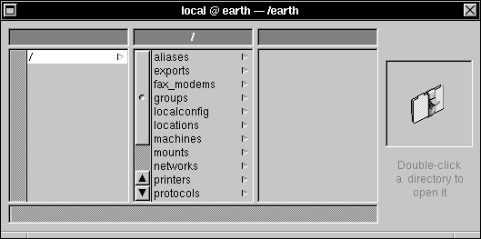 |
| 3. | Double-click "/" to open a Directory window. |
| 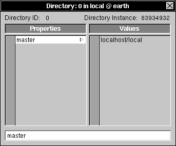 |
| 4. | Click master in the Properties column, then choose Append Property from the Directory menu. |
| 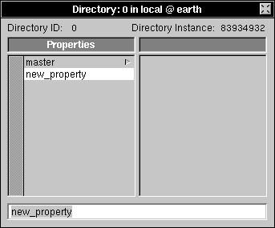 |
| 5. | Enter trusted_networks into the text field and press Return to record the change. |
| 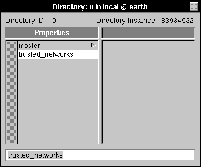 |
| 6. | Choose New Value from the Directory menu. |
| 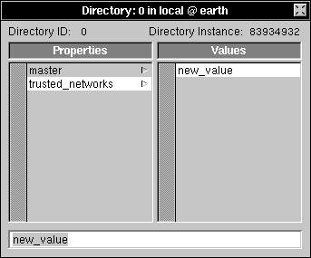 |
| 7. | Click new_value in the Values column. Enter your network address into the text field. The network address is the portion of the Internet address that specifies your network. See Appendix C, "Internet Addressing," for details. |
| Warning: | Be very careful as you enter the number, since a mistake here can disable your network. Don't include a trailing period in the network number (192.42.172 not 192.42.172.). | |
| Press Return to record the change. |
| 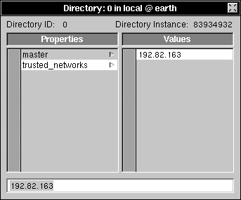 |
| 9. | Save the directory by choosing Save from the Directory menu. Click Change in the confirmation panel if it appears, and enter the root password, if prompted. |
| Only computers that are part of the indicated network can now access this domain.
Unrestricting Access to a Domain If you should ever need to grant access to additional networks, simply add the network address to the trusted_networks property. If you want to make access to the domain unrestricted, follow these steps. |
| 1. | Start up NetInfoManager and open the appropriate domain. | |
| 2. | Click "/". |
| 3. | Double-click "/" to open the Directory window, then click trusted_networks in the Properties column. |
| 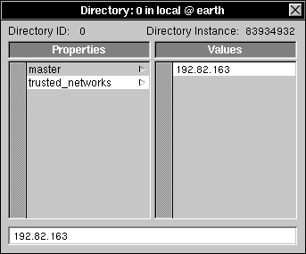 |
| 4. | Choose Delete from the Edit menu. |
| Warning: | If you accidentally delete the master property, close the directory window without saving the changes. Without a master property, the domain will not work. | |
| Save your changes by choosing Save from the Directory menu. Click Change in the confirmation panel if it appears, then enter the root password, if prompted. |
| Monitoring User Activity
The easiest way to get information about which users have been logged into your computer and for how long is to use the command ac. To see a list of users and the amount of time they have logged into the system, enter the following command: |
 /usr/etc/ac -p
/usr/etc/ac -p
| The output is a list of users (in no particular order) and the amount of time they've been logged in since accounting was last reset. To reset accounting, enter the command: |
 cat /dev/null > /private/adm/wtmp
cat /dev/null > /private/adm/wtmp
| This clears all accounting information and resets the counter.
Look for two things when you monitor user activity: |
| Unrecognized accounts | ||
| More activity than usual for a specific account |
| You can examine the last 20 or so logins with the command: |
 last | head -20
last | head -20
| Among other things, the output includes the name of the user, when the user logged in, and how long the user remained on the system. Look for people who have logged in at unusual hours or from unusual places. If you wish to see all of the logins since the system was last reset, use the command: |
 last
last
| You can also use this command to look at all of the times a particular user logged in.
For more information, see the UNIX manual pages for ac and last. |
| Maintaining Security |
| In every computer operating system, design flaws can be exploited to bypass security. You can maintain the security of your computer and your network by keeping track of new problems and avoiding them.
Various organizations inform computer owners of potential security problems. Joining a NeXT user group, for example, is one way to get the latest word on security issues, and it's also a good way to learn about new developments. To get a list of NeXT user groups, call 1-800-848-NeXT. |